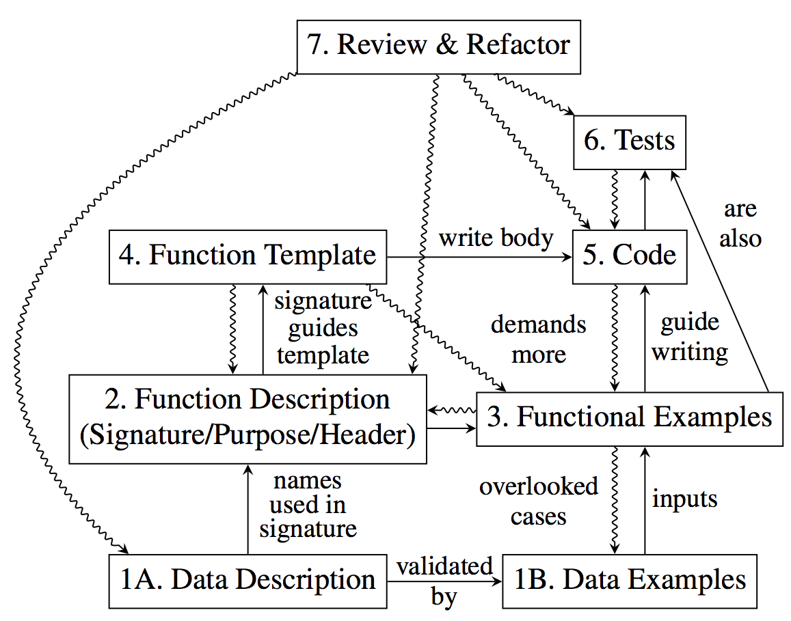

3 Systematischer Programmentwurf
Dieser Teil des Skripts basiert auf [HTDP/2e] Kapitel I und dem Artikel "On Teaching How to Design Programs" von Norman Ramsey.
In diesem Kapitel werden keine neuen Sprachfeatures vorgestellt. Stattdessen geht es in diesem Kapitel um die Methodik des Programmierens: Wie kann systematisch eine Problembeschreibung in ein qualitativ hochwertiges Programm umgeformt werden?
3.1 Funktionale Dekomposition
Programme bestehen nur in den seltensten Fällen aus einer einzelnen Funktion. Typischerweise bestehen Programme aus vielen Funktionsdefinitionen, die teilweise dadurch voneinander abhängig sind, dass sie sich untereinander aufrufen. Betrachten Sie das folgende Programm zur Erstellung etwas plumper "Nigerian-Scam" Briefe:
(define (letter fst lst signature-name) (string-append (opening lst) "\n" (body fst lst) "\n" (closing signature-name))) (define (opening lst) (string-append "Sehr geehrte(r) Herr/Frau " lst ",")) (define (body fst lst) (string-append "Herr Gadafi aus Libyen ist gestorben und hat Sie, " fst ", in seinem Testament als Alleinerben eingesetzt.\n" "Lieber " fst " " lst ", gegen eine kleine Bearbeitungsgebühr überweise ich das Vermögen.")) (define (closing signature-name) (string-append "Mit freundlichen Grüßen," "\n" signature-name))
Diese Definitionen können wir nun benutzen, um mit wenig Aufwand viele solcher Briefe zu erstellen:
> (letter "Tillmann" "Rendel" "Klaus Ostermann") "Sehr geehrte(r) Herr/Frau Rendel,\nHerr Gadafi aus Libyen ist gestorben und hat Sie, Tillmann, in seinem Testament als Alleinerben eingesetzt.\nLieber Tillmann Rendel, gegen eine kleine Bearbeitungsgebühr überweise ich das Vermögen.\nMit freundlichen Grüßen,\nKlaus Ostermann"
Das Ergebnis ist ein langer String. Das \n in dem String steht für einen Zeilenumbruch. Sobald dieser String zum Beispiel in eine Datei geschrieben wird, wird aus dem \n ein echter Zeilenumbruch.
Im Allgemeinen sollte ein Programm so gestaltet sein, dass es eine Funktion pro Aufgabe gibt, die das Programm erledigen soll. Aufgaben sollten hierbei hierarchisch angeordnet sein: Auf der obersten Ebene gibt es die Gesamtaufgabe des Programms (wie das Anfertigen eines Serienbriefs); diese große Aufgabe wird in kleinere Aufgaben wie das Anfertigen der Eröffnung eines Serienbriefs zerlegt, diese können ggf. wieder in weitere kleine Aufgaben zerlegt werden.
Die Struktur der Funktionen sollte der hierarchischen Struktur der Aufgaben folgen. Zu jeder Aufgabe gibt es eine Funktion die in ihrer Implementierung die Funktionen aufruft, die zu den Unteraufgaben korrespondieren. Die Funktionen können dementsprechend als Baum (oder azyklischer Graph) angeordnet werden, an dessen Wurzel die Hauptfunktion steht und an dessen Blättern die Funktionen der untersten Ebene (die nur primitive Funktionen aufrufen) stehen.
Ein Programm, in dem jede Funktion eine klare Aufgabe hat, ist leicht zu verstehen und leichter zu warten, denn wenn es Änderungswünsche gibt, so betreffen diese typischerweise eine bestimmte Aufgabe des Systems. Ist die Implementation dieser Aufgabe in Form einer Funktionsdefinition lokalisiert, so muss nur diese eine Funktion modifiziert werden.
Wenn man eine größere Menge von Funktionen zu programmieren hat, stellt sich die Frage, in welcher Reihenfolge man diese Funktionen programmiert. Zwei wichtige Varianten sind "Top-Down" und "Bottom-Up". "Top-Down" bedeutet, dass man mit der Hauptfunktion anfängt, dann alle Funktionen programmiert die in der Hauptfunktion aufgerufen werden, dann alle Funktionen, die wiederum von diesen Funktionen aufgerufen werden, und so weiter. "Bottom-Up" ist genau umgekehrt: Man programmiert zunächst die einfachsten Funktionen, die wiederum nur primitive Funktionen aufrufen, dann die Funktionen, welche die gerade programmierten Funktionen aufrufen. Dies setzt man fort bis man ganz zum Schluss die Hauptfunktion programmiert. Abzuschätzen, welche Vorgehensweise in welcher Situation die richtige ist, ist ein wichtiges Thema in der Methodik der Softwarekonstruktion.
Wenn die Aufrufstruktur der Funktionen ein azyklischer Graph ist, so ergibt sich automatisch eine Schichtenstruktur, in der alle Funktionen in einer Schicht nur Funktionen aus darunter liegenden Schichten aufrufen. Eine noch stärkere Einschränkung ist die, dass Funktionen ausschliesslich Funktionen aus der Schicht direkt unter ihnen aufrufen dürfen. Diese Einschränkung ist allerdings sinnvoll, denn sie ermöglicht bei geschickter Wahl der Funktionen, eine Schicht zu verstehen ohne alle darunter liegenden Schichten verstehen zu müssen. Diese Situation nennt man hierarchische Abstraktion, und sie ist der Schlüssel, um mit Komplexität großer Softwaresysteme umzugehen.
Die Grundidee bei hierarchischer Abstraktion durch Funktionen ist die, dass man Funktionen so gestalten sollte, dass ein Programmierer
anhand des Namens und der Dokumentation (der Spezifikation) einer Funktion in der Lage ist, eine Funktion effektiv
in einem Programm zu verwenden —
In unserem Beispiel oben ist es so, dass man nicht die Details der opening Funktion verstehen
muss, um die letter Funktion zu verstehen; es reicht, zu wissen, dass diese Funktion die
Eröffnung des Briefes zurückgibt —
3.2 Vom Problem zum Programm
Betrachten Sie folgende Problemstellung für ein zu erstellendes Programm:
The owner of a movie theater has complete freedom in setting ticket prices. The more he charges, the fewer the people who can afford tickets. In a recent experiment the owner determined a precise relationship between the price of a ticket and average attendance. At a price of $5.00 per ticket, 120 people attend a performance. Decreasing the price by a dime ($.10) increases attendance by 15. Unfortunately, the increased attendance also comes at an increased cost. Every performance costs the owner $180. Each attendee costs another four cents ($0.04). The owner would like to know the exact relationship between profit and ticket price so that he can determine the price at which he can make the highest profit.
Die Aufgabe ist relativ klar, aber wie man daraus ein Programm macht nicht. Eine gute Art, diese Aufgabe anzugehen, ist es, die Quantitäten und ihre Abhängigkeiten voneinander zu betrachten und nacheinander in Form einer Funktion zu definieren:
Die Problemstellung sagt, wie die Anzahl der Zuschauer vom Eintrittspreis abhängt. Dies ist eine klar definierte Unteraufgabe, daher verdient sie eine eigene Funktion:
(define (attendees ticket-price) (+ 120 (* (/ 15 0.1) (- 5.0 ticket-price))))
Der Umsatz hängt vom Verkauf der Eintrittskarten ab: Es ist das Produkt aus Eintrittspreis und Anzahl der Zuschauer.
(define (revenue ticket-price) (* (attendees ticket-price) ticket-price))
Die Kosten setzen sich aus zwei Teilen zusammen: Einem festen Anteil ($180) und einem variablen Teil, der von der Anzahl der Zuschauer abhängt. Da die Zahl der Zuschauer wiederum vom Eintrittspreis abhängt, muss diese Funktion auch den Ticketpreis als Eingabeparameter entgegennehmen und verwendet die bereits definierte attendees Funktion:
Dieses Programm enthält diverse magic numbers. Eliminieren Sie diese durch entsprechende Konstantendefinitionen!
Der Gewinn ist schliesslich die Differenz zwischen Umsatz und Kosten.
Da wir bereits Funktionen für die Berechnung von Umsatz und Kosten haben,
muss diese Funktion all die Werte als Eingabe bekommen, die diese Funktionen
benötigen —
(define (profit ticket-price) (- (revenue ticket-price) (cost ticket-price)))
Diese Funktionen können wir nun verwenden, um den Gewinn bei einem bestimmten Eintrittspreis zu berechnen. Probieren Sie aus, bei welchem Preis der Gewinn maximiert wird!
Hier ist eine alternative Version des gleichen Programms, welches nur aus einer einzigen Funktion besteht:
(define (profit price) (- (* (+ 120 (* (/ 15 0.1) (- 5.0 price))) price) (+ 180 (* 0.04 (+ 120 (* (/ 15 0.1) (- 5.0 price)))))))
Überprüfen Sie, dass diese Definition tatsächlich die gleichen Ergebnisse wie das Programm oben produziert. Wir benötigen also prinzipiell nur eine Funktion für dieses Programm; dennoch ist es offensichtlich, dass die erste Version oben deutlich lesbarer ist. Sie ist auch besser wartbar: Überlegen Sie sich beispielsweise, welche Änderungen im Programmtext erforderlich sind, wenn die festen Kosten entfallen und stattdessen pro Zuschauer Kosten in Höhe von $1,50 anfallen. Probieren Sie in beiden Versionen, diese Änderung zu implementieren. Vergleichen Sie.
3.3 Systematischer Entwurf mit Entwurfsrezepten
Das meiste, was sie bisher über das Programmieren gelernt haben, dreht sich darum, wie die Programmiersprache, die sie verwenden, funktioniert und was ihre Konstrukte bedeuten. Wir haben einige wichtige Sprachkonstrukte kennengelernt (Funktionsdefinitionen, Konstantendefinitionen, Ausdrücke) und etwas Erfahrung damit gesammelt, wie man diese Konstrukte einsetzen kann.
Diese Kenntnisse sind jedoch nicht ausreichend, um systematisch aus einer Problembeschreibung ein Programm zu konstruieren. Hierzu müssen wir lernen, was in einer Problembeschreibung relevant ist und was nicht. Wir müssen verstehen, welche Daten das Programm konsumiert und welche es abhängig von den Eingabedaten produzieren muss. Wir müssen herausfinden, ob eine benötigte Funktion in einer Bibliothek vielleicht schon vorhanden ist oder ob wir selber diese Funktion programmieren müssen. Wenn wir ein Programm haben, müssen wir sicherstellen, dass es sich tatsächlich wie gewünscht verhält. Hierbei können allerlei Fehler auftreten, die wir verstehen und beheben müssen.
Gute Programme haben eine kurze Beschreibung dessen, was sie tun, welche Eingabe sie erwarten, und was für eine Ausgabe sie produzieren. Am besten wird gleichzeitig dokumentiert, dass das Programm tatsächlich funktioniert. Nebenbei sollten Programme auch noch so strukturiert sein, dass eine kleine Änderung in der Problembeschreibung auch nur eine kleine Änderung am Programm bedeutet.
Diese ganze Arbeit ist notwendig, weil Programmierer nur selten für sich selbst Programme schreiben. Programmierer schreiben Programme, die andere Programmierer verstehen und weiterentwickeln müssen. Große Programme werden über lange Zeiträume von großen Teams entwickelt. Neue Programmierer stoßen während dieses Zeitraums hinzu, andere gehen. Kunden ändern ständig ihre Anforderungen an das Programm. Große Programme enthalten fast immer Fehler, und oft sind diejenigen, die den Fehler beheben müssen nicht identisch mit denen, die die Fehler eingebaut haben.
Recherchieren Sie, was das "Jahr 2000 Problem" ist.
Aus diesen Gründen werden wir Ihnen systematische Anleitungen an die Hand geben, mit denen unterschiedliche Entwurfsaufgaben Schritt für Schritt gelöst werden können. Diese Anleitungen nennen wir Entwurfsrezepte.
3.3.1 Testen
Ein wichtiger Bestandteil der vorgestellten Methodik wird es sein, Programme systematisch und automatisiert zu testen. Beim Testen führt man ein Programm oder einen Programmteil (wie eine Funktion) mit Testdaten aus und überprüft, ob das Resultat das ist, welches man erwartet. Natürlich kann man "von Hand" testen, indem man zum Beispiel im Interaktionsbereich Ausdrücke auswertet und die Ergebnisse überprüft. Allerdings wird es schnell langweilig, wenn man die gleichen Tests immer wieder aufschreibt, um zu überprüfen, ob man bei einer Programmänderung nichts "kaputt" gemacht hat.
Wann, wo, wieso und wieviel man testen sollte werden wir später diskutieren. Hier beschreiben wir nur, wie man in DrRacket automatisiert testet. Hierzu gibt es eine spezielle Funktion in BSL, check-expect. Diese erwartet zwei Parameter, von denen der erste ein Ausdruck ist, der getestet werden soll, und der zweite ein Ausdruck, der das gewünschte Ergebnis beschreibt. Beispiel: (check-expect (+ 2 3) 5) überprüft, ob das Ergebnis der Auswertung von (+ 2 3) den Wert 5 ergibt.
Hier ist ein Beispiel wie check-expect verwendet werden kann, um eine Funktion zur Konvertierung zwischen Fahrenheit und Grad Celsius zu testen:
(check-expect (f2c -40) -40) (check-expect (f2c 32) 0) (check-expect (f2c 212) 100) (define (f2c f) (* 5/9 (- f 32)))
Alle check-expect Tests werden jedesmal ausgeführt, wenn auf den "Start" Knopf gedrückt wird. Falls alle Tests erfolgreich waren, wird dies durch eine kurze Meldung quittiert. Falls mindestens ein Test fehlschlägt, wird dies durch eine Fehlermeldung mit genaueren Informationen dazu angezeigt.
Es gibt einige Varianten von check-expect, wie zum Beispiel check-within und check-range. Verschaffen Sie sich mit Hilfe der Dokumentation einen Überblick.
Um den Programmierer zu unterstützen, zeigt DrRacket durch Färbung des Codes an, welche Teile ihres Programms bei der Ausführung der Tests durchlaufen wurden. Probieren Sie dieses Verhalten selbst aus!
(define (ring innerradius outerradius color) (overlay (circle innerradius "solid" "white") (circle outerradius "solid" color)))
so testen:
(check-expect (ring 5 10 "red") )
Da check-expect beliebige Ausdrücke als Parameter erwartet, können statt dem Ergebnis selber auch auch Eigenschaften von Ergebnissen überprüft werden, zum Beispiel so:
(check-expect (image-width (ring 5 10 "red")) 20)
Wir werden später sehen, dass dies wichtig ist, um Tests nicht zu stark an die Implementation einer Funktion zu koppeln.
3.3.2 Informationen und Daten
Ein Programm beschreibt eine Berechnung, die Informationen aus der Domäne des Programms verarbeitet und produziert. Eine Information ist zum Beispiel so etwas wie "das Auto ist 5m lang" oder "der Name des Angestellten ist ’Müller’ ".
Ein Programm kann jedoch solche Informationen nicht direkt verarbeiten. Wir müssen stattdessen Informationen als Daten repräsentieren. Diese Daten können wiederum als Information interpretiert werden. Beispielsweise könnten wir die erste Information oben als Zahl mit dem Wert 5 und die zweite Information als String mit dem Wert "Müller" repräsentieren.
Ein Datum wie die Zahl 5 wiederum kann auf vielfältige Weise interpretiert werden. Beispielsweise kann, wie im Beispiel oben, die Länge eines Autos in Metern gemeint sein. Genauso kann sie aber auch als Temperatur in Grad Celsius, als Geldbetrag in Euro, oder als Endnote Ihrer Klausur in dieser Veranstaltung interpretiert werden (hoffentlich nicht :-).
Da diese Beziehung zwischen Information und Daten so wichtig ist, werden wir Sie von nun an in Form spezieller Kommentare, die wir Datendefinitionen nennen, aufschreiben. Eine Datendefinition beschreibt eine Klasse von Daten durch einen sinnvollen Namen, der auf die Interpretation der Daten hinweist.
Hier sind einige Beispiele für Datendefinitionen:
; Distance is a Number. ; interp. the number of pixels from the top margin of a canvas ; Speed is a Number. ; interp. the number of pixels moved per clock tick ; Temperature is a Number. ; interp. degrees Celsius ; Length is a Number. ; interp. the length in centimeters ; Count is a Number. ; interp. the number of characters in a string. ...
Zum jetzigen Zeitpunkt kennen Sie nur einige wenige Formen von Daten (Zahlen, Strings, Bilder, Wahrheitswerte), daher müssen Sie alle Informationen mit diesen Datentypen repräsentieren. Später werden wir andere Datentypen kennenlernen, in denen es deutlich anspruchsvoller wird, eine geeignete Repräsentation für seine Informationen zu wählen.
Oft ist es hilfreich, Datenbeispiele zu einer Datendefinition anzugeben.
; Temperature is a Number. ; interp. degrees Celsius ; Examples: (define SUNNY-WEATHER 25) (define BLOODY-COLD -5)
Die Definition von Datenbeispielen hat zwei Vorteile: 1) Sie helfen, eine Datendefinition zu verstehen. Beispielsweise könnte es sein, dass Sie versehentlich ihre Datendefinition so gestaltet haben, dass es gar keine Datenbeispiele gibt. 2) Sie können die Beispiele in Tests von Funktionen verwenden, die solche Daten konsumieren oder produzieren.
3.3.3 Entwurfsrezept zur Funktionsdefinition
Auf Basis der gerade besprochenen Trennung zwischen Informationen und Daten können wir nun den Entwurf einzelner Funktionen als eine Abfolge von Schritten beschreiben.
Definieren Sie wie Sie die für die Funktion relevanten Informationen (Eingabe und Ausgabe) als Daten repräsentieren. Formulieren Sie entsprechende Datendefinitionen (sofern nicht bereits vorhanden). Geben Sie für nicht-triviale Datendefinitionen einige interessante Beispiele für die Datendefinition an.
- Schreiben Sie eine Signatur, eine Aufgabenbeschreibung, und einen Funktionskopf. Eine Signatur ist ein BSL Kommentar, der dem Leser sagt, wieviele und welche Eingaben die Funktion konsumiert und was für eine Ausgabe sie produziert. Hier sind zwei Beispiele:
- Für eine Funktion, die einen String konsumiert und eine Zahl produziert:; String -> Number
- Für eine Funktion die eine Temperatur und einen Boolschen Wert konsumiert und einen String produziert:; Temperature Boolean -> StringBeachten Sie dass wir die vorherige Datendefinition für Temperature verwendet haben.
Eine Aufgabenbeschreibung ist ein BSL Kommentar der den Zweck der Funktion in einer Zeile zusammenfasst. Die Aufgabenbeschreibung ist die kürzestmögliche Antwort auf die Frage: Was berechnet die Funktion? Jeder Leser ihres Programms sollte verstehen, was eine Funktion berechnet ohne die Funktionsdefinition selbst lesen zu müssen.
Ein Funktionskopf, manchmal auch Header oder Stub genannt, ist eine Funktionsdefinition, die zur Signatur passt aber in der der Body der Funktion nur ein Dummy-Wert ist, zum Beispiel 0 falls eine Zahl zurückgegeben werden soll oder (empty-scene 100 100) falls ein Bild zurückgegeben werden soll. Beim Entwurf des Funktionskopfs müssen trotzdem wichtige Entscheidungen getroffen werden, nämlich die Namen der Funktion und der Eingabeparameter müssen bestimmt werden. Typischerweise sollten die Parameternamen einen Hinweis darauf geben, was für Informationen oder welchen Zweck die Parameter repräsentieren. Die Namen der Parameter können oft sinnvoll in der Aufgabenbeschreibung verwendet werden.
Hier ein vollständiges Beispiel für eine Funktionsdefinition nach diesem Schritt:
; Number String Image -> Image ; add s to img, y pixels from top, 10 pixels to the left (define (add-image y s img) (empty-scene 100 100)) Zu diesem Zeitpunkt können Sie bereits auf den "Start" Knopf drücken und die Funktion benutzen —allerdings wird natürlich stets nur der Dummy-Wert und nicht das gewünschte Ergebnis zurückgegeben. - Schreiben Sie zwischen Aufgabenbeschreibung und Funktionskopf Tests, die anhand von Beispielen dokumentieren, was die Funktion macht. Diese Tests sind einerseits Teil der Dokumentation der Funktion, auf der anderen Seite werden diese Tests automatisiert ausgeführt und schützen sie damit vor Fehlern im Funktionsbody. Hier ist ein Beispiel, wie eine Funktion nach diesem Schritt aussieht:
; Number -> Number ; compute the area of a square whose side is len (check-expect (area-of-square 2) 4) (check-expect (area-of-square 7) 49) (define (area-of-square len) 0) Führen Sie die Tests nun einmal aus und überprüfen, dass alle Tests (für die die Dummy-Implementierung nicht zufällig das korrekte Ergebnis liefert) fehlschlagen. Dieser Schritt ist wichtig um Fehler in der Formulierung der Tests zu finden, die bewirken könnten, dass der Test immer erfolgreich ist. In diesem Schritt überlegen Sie sich, welche der Ihnen zur Verfügung stehenden Eingabedaten und ggf. Hilfsfunktionen und Variablen Sie zur Berechnung benötigen. Sie ersetzen den Dummy-Wert aus dem zweiten Schritt mit einem Template (Schablone), in dem die Eingabedaten/Funktionen/Variablen von oben vorkommen. Im Moment sieht dieses Template so aus, dass einfach die Eingabedaten/Funktionen/Variablen durch ... voneinander getrennt unsortiert im Funktionsbody stehen. Später werden wir interessantere Templates kennenlernen.
In unserem letzten Beispiel könnte die Funktion nach diesem Schritt beispielsweise so aussehen:
; Number -> Number ; compute the area of a square whose side is len (check-expect (area-of-square 2) 4) (check-expect (area-of-square 7) 49) (define (area-of-square len) (... len ...)) Jetzt ist es an der Zeit, den Funktionsbody zu implementieren, also das Template nach und nach durch einen Ausdruck zu ersetzen, der die Spezifikation (Signatur, Aufgabenbeschreibung, Tests) erfüllt. Unsere area-of-square Funktion könnte nun so aussehen:
; Number -> Number ; compute the area of a square whose side is len (check-expect (area-of-square 2) 4) (check-expect (area-of-square 7) 49) (define (area-of-square len) (* len len)) Die add-image Funktion könnte nach diesem Schritt so aussehen:; Number String Image -> Image ; add s to img, y pixels from top, 10 pixels to the left (check-expect (add-image 5 "hello" (empty-scene 100 100)) (place-image (text "hello" 10 "red") 10 5 (empty-scene 100 100))) (define (add-image y s img) (place-image (text s 10 "red") 10 y img)) Es ist wichtig, zu verstehen, dass der Test nicht aussagt, dass add-image mit Hilfe von place-image implementiert wurde. Die check-expect Funktion vergleicht die Bilder, die aus den Audrücken entstehen, und nicht die Ausdrücke selber. Beispielsweise könnten wir den zweiten Parameter auch durch ein Bildliteral (also ein Bild im Programmtext) ersetzen. Daher "verrät" der Test nicht die Implementation der Funktion. Dies ist wichtig, weil wir damit die Möglichkeit haben, die Implementation der Funktion zu verändern, ohne dass Klienten der Funktion (also Aufrufer der Funktion) davon betroffen werden. Dieses Konzept nennt man auch Information Hiding.Nun ist es Zeit, die Funktion zu testen. Da unsere Tests automatisiert sind, genügt hierzu ein Klick auf "Start". Falls ein Test fehlschlägt, ist entweder der Test falsch, oder die Funktionsdefinition enthält einen Fehler (oder beides gleichzeitig). Als erstes sollten Sie in diesem Fall überprüfen, ob das beobachtete Verhalten wirklich fehlerhaft war oder nur ihr Test fehlerhaft ist. Reparieren Sie, je nachdem, den Test beziehungsweise die Funktionsdefinition, bis der Test fehlerfrei ausgeführt wird.
- Der letzte Schritt besteht in der Nachbearbeitung und dem Refactoring der neu definierten Funktion und ggf. anderer Teile des Programms. Aktivitäten in diesem Schritt umfassen:
Überprüfung der Korrektheit der Signatur und Aufganbenbeschreibung und der Übereinstimmung mit der Implementierung der Funktion (z.B. Anzahl und Aufgabe der Parameter).
Überprüfung der Testabdeckung: Wird der Code vollständig durch Testcases abgedeckt? Gibt es ein Beispiel für jeden interessanten Fall der Eingabeparameter ("corner cases")? Gibt es ein Beispiel für jeden interessanten Fall der Ausgabe?
Überprüfen Sie, ob die Funktionsdefinition dem vorgeschlagenen Template des Entwurfsrezept entspricht.
Überprüfen Sie, ob es Funktionen oder Konstanten gibt, die nicht mehr benötigt und daher gelöscht werden können.
Suchen Sie nach redundantem Code, also Code der identisch oder ähnlich an mehreren Stellen des Programms vorkommt. Identifizieren Sie ggf., wie Sie durch eine Konstanten- oder Funktionsdefinition die Redundanz eliminieren können.
Überprüfen Sie, ob es Funktionen mit ähnlichen Aufgabenbeschreibungen und/oder ähnlichen Ein-/Ausgaben gibt. Identifizieren und eliminieren Sie ggf. die Redundanz.
Vereinfachen Sie konditionale Ausdrücke in denen verschiedene Fälle zusammengefasst werden können.
Testen Sie nach jedem Refactoring unverzüglich das Programm. Ein Refactoring sollte niemals das Verhalten des Programms ändern. Vermischen Sie auf keinen Fall Refactoring und Erweiterung/Modifikation des Programms.
Diese Abbildung stammt aus dem Artikel "On Teaching How to Design Programs" von Norman Ramsey.

3.3.4 Programme mit vielen Funktionen
Die meisten Programme bestehen nicht aus einer sondern aus vielen Funktionen. Diese Funktionen sind häufig voneinander abhängig, da eine Funktion eine andere Funktion aufrufen kann.
Sie haben oben ein Entwurfsrezept für den Entwurf einzelner Funktionen gesehen. Dieses sollten Sie beim Entwurf jeder einzelnen Funktion verwenden. Wenn Sie viele Funktionen und globale Konstanten (Variablen) definiert haben, so sollten Sie im Funktionstemplate die Funktionen und Konstanten aufführen, von denen Sie glauben, dass sie im endgültigen Funktionsbody benötigt werden.
Recherchieren Sie was die Abkürzungen FIFO und LIFO bedeuten. Diskutieren Sie, ob FIFO oder LIFO für die Wunschliste geeignet sind und was für Konsequenzen dies hat.
Ein Vorteil des Top-Down Entwurfs ist, dass Sie Schritt für Schritt ihr großes Entwurfsproblem in immer kleinere Probleme zerlegen können, bis die Probleme so klein werden, dass Sie sie direkt lösen können (im Fall von Funktionsdefinitionen sind dies Funktionen, die nur noch eingebaute Funktionen oder Bibliotheksfunktionen verwenden).
Ein wichtiger Nachteil ist, dass Sie erst relativ spät die Details der Hilfsfunktionen programmieren. Falls Sie einen Denkfehler gemacht haben und die Hilfsfunktionen so gar nicht implementiert werden können, müssen Sie unter Umständen einen großen Teil ihrer Arbeit wieder in den virtuellen Papierkorb werfen. Ein anderer wichtiger Nachteil ist der, dass Sie erst sehr spät ihre Funktionen testen können, nämlich erst wenn alle Hilfsfunktionen vollständig implementiert wurden. Eine Möglichkeit, dieses Problem zu umgehen, ist, eine Hilfsfunktion erstmal durch einen Test Stub zu ersetzen. Ein Test Stub ist eine Dummy-Funktionsdefinition, die eine vordefinierte Antwort zurückliefert, wie sie im Kontext eines Tests erwartet wird. Nehmen Sie beispielsweise an, Sie möchten eine area-of-cube Funktion definieren, die eine noch nicht programmierte area-of-square Funktion benutzt. Um area-of-cube trotzdem testen zu können, können Sie area-of-square zunächst provisorisch durch einen Test Stub wie in diesem Beispiel implementieren. Wenn Sie sich später dafür entscheiden, diese Funktion zu implementieren, ersetzen Sie den Test Stub durch die richtige Funktionsdefinition.
; Number -> Number ; computes the area of a cube with side length len (check-expect (area-of-cube 3) 54) (define (area-of-cube len) (* 6 (area-of-square len))) ; Number -> Number ; computes the area of a square with side length len (check-expect (area-of-square 3) 9) (define (area-of-square len) (if (= len 3) 9 (error "not yet implemented")))
Der Test Stub für area-of-square benutzt die Funktion error. Diese ist gut dafür geeignet, zu dokumentieren, dass eine Funktion noch nicht fertig implementiert wurde. Dies ist insbesondere besser, als stillschweigend ein falsches Ergebnis zurückzuliefern, denn dann fällt Ihnen unter Umständen erst sehr spät auf, dass Sie diesen Teil noch implementieren müssen.
3.4 Information Hiding
Der Name, die Signatur, die Aufgabenbeschreibung und die Tests bilden zusammen die Spezifikation
einer Funktion. Die Spezifikation sollte ausreichend viele Informationen enthalten, um die Funktion
benutzen zu können —
Eines der wichtigsten Prinzipien, um in der Programmierung mit der Komplexität großer Programme umzugehen, heißt
Information Hiding, im Deutschen manchmal auch Geheimnisprinzip genannt. In Bezug auf Funktionen
sagt dieses Prinzip aus, dass ein Programm besser lesbar, verstehbar und wartbar ist, wenn alle Aufrufer von
Funktionen sich nur auf die Spezifikationen der Funktion verlassen, aber nicht von Implementierungsdetails abhängen.
Ferner sagt dieses Prinzip aus, dass es einen Unterschied zwischen Spezifikation und Implementation geben sollte, und
zwar dergestalt, dass es viele mögliche Implementationen der gleichen Spezifikation gibt. Wenn sich alle an diese
Regel halten, so ist garantiert, dass man die Implementation jeder Funktion beliebig modifizieren kann —
Betrachten Sie als Beispiel die body Funktion aus dem Spam-Mail-Generator von oben. Hier ist die Definition mit einer möglichen Spezifikation:
; String String -> String ; generates the pretense for money transfer for the victim fst last (check-range (string-length (body "Tillman" "Rendel")) 50 300) (define (body fst lst) (string-append "Herr Gadafi aus Libyen ist gestorben und hat Sie, " fst ", in seinem Testament als Alleinerben eingesetzt.\n" "Lieber " fst " " lst ", gegen eine kleine Bearbeitungsgebühr überweise ich das Vermögen."))
Ein Beispiel für einen Aufrufer, der sich nicht an die Spezifikation hält und unzulässig an die Implementation koppelt, wäre einer, der Folgetext für den Brief definiert, der sich auf Details des Textes wie Namen und Orte bezieht, die nicht in der Spezifikation gennant werden.
Halten sich jedoch alle Aufrufer an das Geheimnisprinzip, so ist sichergestellt, dass sich die Implementation von body weitgehend ändern läßt, solange es ein plausibler Text gemäß der Aufgabenbeschreibung ist, der zwischen 50 und 300 Zeichen lang ist.
Dieses Beispiel illustriert weiterhin, wieso es häufig sinnvoll ist, in Tests nur
bestimmte Eigenschaften des Ergebnisses zu testen, aber nicht das Ergebnis exakt vorzuschreiben.
Im Beispiel wird nur getestet, dass die Länge des generierten Strings zwischen 50 und 300 ist —
3.5 Signaturen als Teil des Codes
Der Vorteil unsere Methode, Signaturen als semi-formalen Kommentar zu definieren, ist, dass sich diese Form des Programmentwurfs in fast jeder Programmiersprache einsetzen lässt. Allerdings haben diese Kommentare auch einige Nachteile. Dadurch, dass sie nicht automatisiert überprüfbar und lesbar sind, können sich Fehler einschleichen. Der Programmierer muss Disziplin aufbringen, um die Signaturen zu erstellen und bei Änderungen des Codes immer dem jeweils aktuellen Stand anzupassen. Wenn sich eine Definition nicht an die angegebene Signature hält, so fällt dies zunächst nicht auf und es kann möglicherweise erst irgendwann zur Laufzeit zu einem Fehler kommen, von dem nicht unmittelbar klar ist, dass die Ursache in der Signaturverletzung liegt.
In der neuesten Version von DrRacket (8.10) gibt es daher die Möglichkeit, formale Signaturen anzugeben, die von DrRacket gelesen und zur Laufzeit überprüft werden könnnen.
Schauen wir uns zwei Beispiele an, die von dieser Möglichkeit Gebrauch machen.
(: AGE Integer) (define AGE 42) (: area-of-square (Number -> Number)) (define (area-of-square len) (sqr len))
Wenn dieses Programm ausgeführt wird, so werden die angegebenen Signaturen überprüft. Falls jedoch gegen die Signatur verstossen wird, so wie hier:
(: AGE Integer) (define AGE "fortytwo")
so wird eine Signaturverletzung angezeigt.
Bei Funktionen werden Signaturverletzungen erst angezeigt, wenn die Funktion aufgerufen wird. So ergibt beispielsweise
Die vordefinierten Signaturen, die sie verwenden können, beinhalten Boolean (für die boolschen Werte), Integer (ganze Zahlen), Natural (natürliche Zahlen), Number (beliebige Zahlen), Rational (rationale Zahlen), Real (reale Zahlen) und String.
Wir werden später noch Möglichkeiten einführen, um weitere und eigene Signaturen zu definieren und zu nutzen.
Leider gibt es derzeit (Version 8.10) noch keine vordefinierte Signatur Image für Bilder. Deshalb können formale Signaturen nicht verwendet werden, wenn Bilder Teil der Signatur sind. Als Workaround kann die Signatur Any verwendet werden. Diese Signatur passt auf jeden Wert.